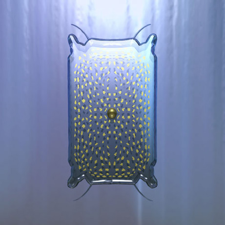

|  |
Discovered by : J.J. Berzelius
Year Discovered : 1824
Isolated in Stockholm, Sweden
Origin : The name is derived from the Latin ‘silicus’, meaning flint.
Description :
The second most abundant element on the surface of the Earth after oxygen. Sand and flint are silicon dioxide, as are semi-precious stones such as rock crystal and rhinestone. The element itself, when ultrapure, is blue-grey and used as the semi-conductor in ‘silicon chips’. Every year, 5,000 tonnes of semi-conductor-grade silicon and 500,000 tonnes of metallurgy-grade silicon are produced. Silicon is essential for some species, and perhaps for humans, in whom it is found in connective tissue and skin.
|